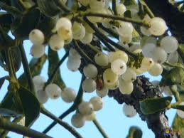

Gui

Gui (Viscum album de la famille des Loranthacées)
Attention : hautement toxique par ingestion pour le Korat !
Partie toxique pour les chats en général et le Korat en particulier :
Toute la plante mais essentiellement les baies.
Symptômes du processus pathologique :
Dérangements du système digestif, tressaillements musculaires, sécrétion excessive d'urine, dilatation des pupilles, allergies.
Origine de la toxicité (principe actif) :
Un polypeptide, la viscotoxine mais aussi acétylcholine et saponosides.